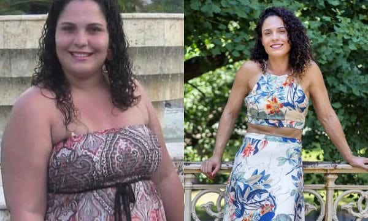
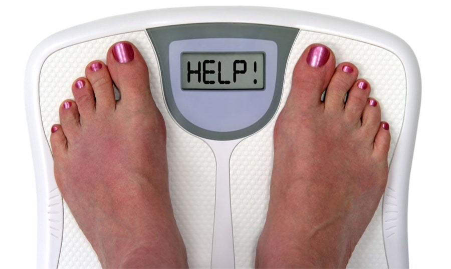
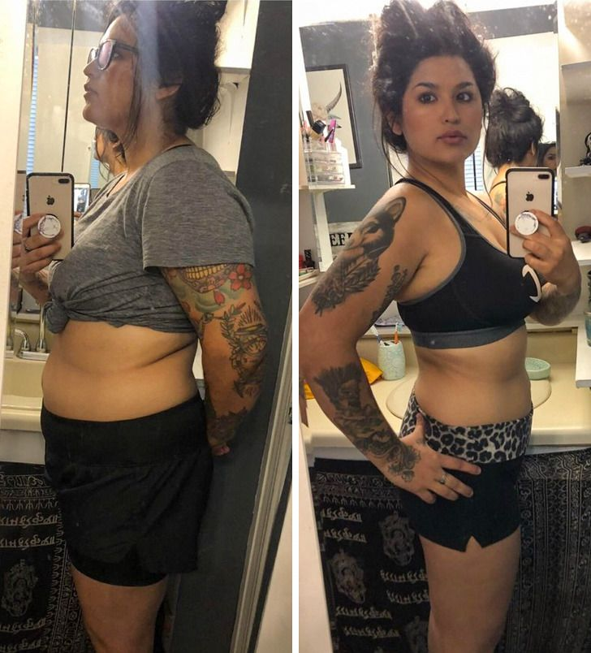
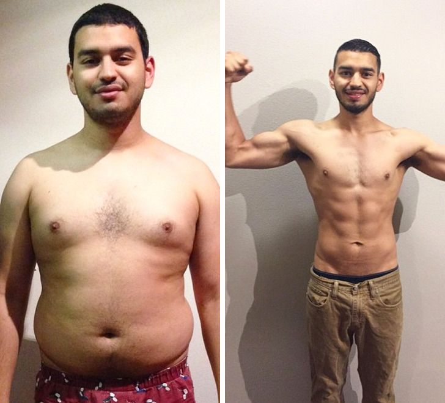
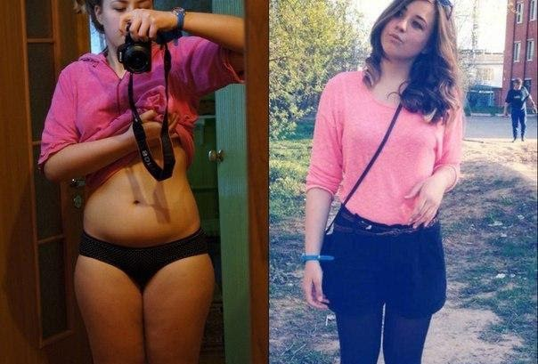
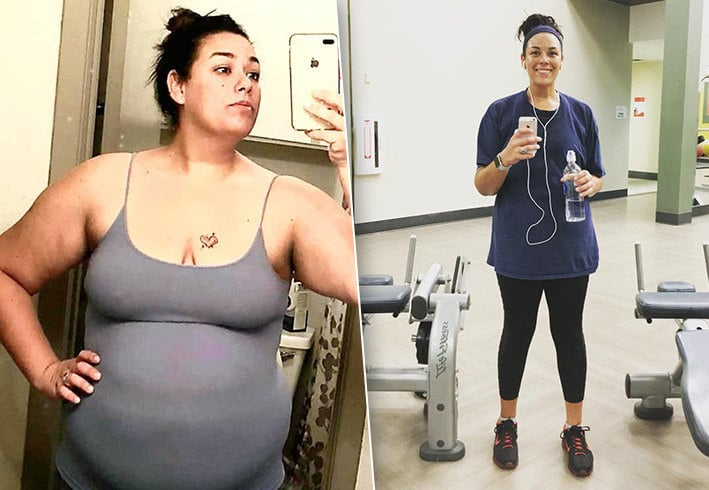

Blog de la Mamá: ¡Alexa te lo contará!
Acerca de mi: ¡Hola a todos! Mi nombre es Alexa, soy madre de dos niños maravillosos y una esposa feliz. En mi blog, comparto lifehacks, escribo artículos sobre psicología y familia.
La mejor forma de perder peso que he probado: menos 40 kilogramos y un cuerpo tonificado
Lo hice bien, aunque los nutricionistas estaban seguros de que nunca podría perder peso. Y tú también lo podrás. He demostrado con mi ejemplo: no es necesario gastar mucha pasta, esfuerzo y tiempo en esto. Con la nueva técnica de pérdida de peso, todo es mucho más fácil. Voy a hablar de ella en mi artículo de hoy.



Antes de entrar en la historia de la maravillosa forma de perder peso, cuyos resultados sorprenden a todos los médicos, entendamos: ¿te conviene?
Te lo haré entender con mi ejemplo: nunca he hecho ejercicio, entiendo poco sobre la nutrición adecuada, la dietética y las dietas. Pero, sin embargo, hoy peso 55 kilogramos con 168 centímetros de estatura. Estoy contenta con mi cuerpo, mi esposo no para de mirarme y los niños todos los días dicen que su madre es la más hermosa. No siempre fue así: una vez pesé 95 kilogramos, y mi cuerpo parecía una bolsa de papas sin forma, así es como me sentía.
Para lograr tales resultados, no tuve que morir de hambre, matarme en el gimnasio y contratar nutricionistas costosos.

La causa de mi gran peso eran mis problemas hormonales, todo debido al agrandamiento de la tiroides y los trastornos en la lipólisis.
Los médicos me dijeron que las personas con tales enfermedades nunca podrían perder peso sin una terapia hormonal pesada.
¡Pero siempre quise ser una madre saludable para mis hijos y una mujer deseada por mi esposo! Confieso que en algún momento sentí que mi familia se estaba desbaratando. No tenía la fuerza para estar al mando de mi casa, dedicar tiempo a los niños, etc. Después de todo, el exceso de peso no solo no es lindo, sino que es un gran golpe para todo el cuerpo.
Estaba dispuesta a tomar las medidas más extremas: someterme a una cirugía de bipass gástrico, liposucción o algo de ese tipo. Pero tuve suerte, ya que pude encontrar el remedio más novedoso que permite perder peso de manera rápida, efectiva y sin dañar la salud.
Todo comenzó con mis viajes de negocios a Alemania, fue allí donde me enteré del W-loss. Ya había intentado perder peso con la ayuda de todo tipo de remedios publicitados como polvos que deben diluirse en agua, píldoras raras, etc., pero nunca pude lograr los resultados deseados. En general, solo botaba mi dinero. Así que al principio no creía mucho en las maravillosas propiedades de W-loss. Pero aún así decidí probarlo.
Debo decir que el inicio no fue de inmediato. No pierdes peso con el chasquido de tus dedos. Pero después de una semana y media, noté los primeros resultados: ¡mis pantalones en los que no podía caber durante varios años se me entraban! Esto fue una gran motivación para mí para seguir así.

Una amiga con la que no nos habíamos visto en mucho tiempo pensó que me había hecho una liposucción e insistió en que compartiera con ella los contactos del cirujano que pudo hacer ese trabajo de joyería. Solo me reí: ¿Pero qué liposucción?! ☺ Toda esta magia es mérito de W-loss.
¿En qué se diferencia W-loss de otros remedios?
En primer lugar, porque realmente funciona. No es una pérdida de tiempo y dinero.
En segundo lugar, W-loss no solo elimina los kilos de más, sino que también mejora la calidad del cuerpo, haciéndolo más delgado y en forma, gracias a sus cuatro propiedades principales:
- Acelera el metabolismo el doble y elimina los desechos y toxinas de los órganos del T.G.I. Las toxinas que se acumulan en el intestino lo obstruyen, bloqueando así el proceso de pérdida de peso. También son causa de astenia y apatía.
- Le permite perder peso de forma natural. Es decir, es una pérdida de peso completamente saludable y fisiológica, a diferencia de muchas drogas extrañas y dudosas, como las píldoras tailandesas, que contienen huevos de parásitos.
- Combate la grasa subcutánea y visceral, elimina la celulitis. 6 kg es el peso mínimo de grasa neta de la que te deshaces en una semana.
- Activa el funcionamiento de los músculos incluso en un estado de reposo. Es decir, no necesitas hacer ejercicio para obtener los cubitos en el abdomen, músculos de las piernas y tensar la piel de los brazos.

Estos son los cuatro aspectos necesarios para una pérdida de peso ideal. Si falta al menos uno de ellos, ¡no lograrás el cuerpo de los sueños!
Durante mi vida, probé un montón de diferentes métodos para perder peso. Todo tipo de dietas publicitadas como Dukan, dieta de líquidos, alimentación fraccionada 16/8. Todo esto solo sacudió mi metabolismo y mi psique, pero no se lograron resultados estables. Basándome en mi experiencia, puedo decir que W-loss es el único remedio realmente efectivo.
Ya ahora entiendo que, al tocar el tema de método de pérdida de peso, debes confiar en cuatro factores: limpieza, seguridad, eficacia y mejora de la calidad del cuerpo; ya he hablado de todo lo anterior. Y todos estos aspectos están combinados en W-loss.
Estas cosas ahora me parecen tan naturales y obvias, aunque antes ni siquiera lo había adivinado. Solo un estudio más profundo de la anatomía y los procesos metabólicos internos del cuerpo humano me permitió darme cuenta de lo importantes que son estas cosas.
¡No es necesario acudir a cirujanos y nutricionistas! Es fácil perder peso en casa por nuestra propia cuenta.

Esta es mi opinión como experta, si se puede decir eso. Perdí 40 kilogramos por mi cuenta que incluso mi madre no me reconoció.
Lo que ocurre es que el mecanismo de acción de este remedio se basa en la investigación de nutricionistas famosos de los Estados Unidos: Josh Collister, Henry Hopkins y Jodi Stone. ¿Estos nombres te dicen algo? ¡Pues que estas personas hicieron una revolución en la lucha contra el exceso de peso!
El ritmo moderno de la vida nos dicta condiciones tales que no todos tienen tiempo libre para ir al gimnasio o dinero extra que se puede gastar en un nutricionista que le hará un programa de nutrición individual. Y ni siquiera es seguro que lo seguirá, es posible que no tenga suficiente fuerza de voluntad para reducir significativamente la cantidad de alimentos. Es en esos momentos que podemos recurrir a remedios como W-loss.
Eso es todo lo que quería decirte. Para aquellos que no creen en la simplicidad y la eficacia de este método, puedo decir que W-loss ha pasado una serie de ensayos clínicos en el Instituto nacional de dietética y nutrición adecuada de los Estados Unidos.
También aconsejo que analicemos los comentarios de las personas que completaron con éxito el programa con W-loss y pudieron cambiar su cuerpo para mejor:

"Literalmente, hace nada dejé de tomar W-loss. Por consejo de Alexa me pedí un tratamiento completo. Entonces, ¡mi resultado es menos 25 kilogramos! Por fin empecé a gustarme en el espejo. Por cierto, para aquellos que temen la flacidez de la piel: al mejorar las sustancias metabólicas, la piel se vuelve muy elástica, como si se renovara... no soy una experta en esto, así que no puedo decir cómo será científicamente. En general, recomiendo probar W-loss a todas las personas que sufren de exceso de peso".
Alma, 31 años

"Un remedio excelente y efectivo. También tuve suerte: compré un W-loss con un buen descuento".
Pablo, 37 años

"¡Finalmente pude cumplir mi sueño y deshacerme de todo lo que sobra! Todo gracias a W-loss. Soy un biólogo, por lo que comencé su uso solo después de entender bien cómo funcionaba este remedio. ¡Ahora soy una persona completamente diferente!"
Beatriz, 27 años

"Todavía no he terminado de tomar W-loss, ¡pero ya he podido deshacerme de 20 kilogramos! El resultado está padrísimo. Además de la figura, la piel, el cabello y las uñas se transformaron por completo. Todo gracias al complejo de vitaminas en la composición de W-loss. Sí, definitivamente no encontrarás mejor este remedio".
Carlita, 35 años

"No puedo imaginar mi vida sin carne asada y cerveza. Pero con W-loss, estas llantas de colesterol simplemente se disuelven: no me siento pesado después de chupar montones y una cena densa. Además, pude bajar 24 kg en un mes".
Alejandro, 39 años
W-loss es la técnica de adelgazamiento del futuro!
Lo principal es seguir estrictamente las instrucciones y no omitir las horas. Luego, después de un mes, verás a una persona completamente diferente, más delgada y en forma, en el espejo.
Por último, algunos consejos personales:
- Esté atento a los cambios de peso día tras día.
- No se salte la hora de conusmo. 1-2 veces al día durante las comidas.
- Beba la mayor cantidad de líquido posible, al menos un litro y medio por día. Esto le ayudará a acelerar el proceso de pérdida de peso.
Y las buenas noticias: solo hasta el , inclusive, en el sitio web del fabricante de W-loss, puede comprar este producto con un descuento de hasta 50%. Dese prisa ☺
Lea más historias de personas que perdieron peso con W-loss:
El remedio con el que todos pierden peso читать далее
Perdí fácilmente 30 kilos y comencé una nueva vida. Mi método para bajar de peso después de 50 años читать далее

Mi historia real de perder peso sin dañar la salud y la dieta. читать далее
Alexa, tengo el mismo problema que tú, he aumentado de peso debido a la tiroides. Seguí tu consejo y ordené W-loss, comencé a tomarlo. ¡Ya veo los primeros resultados! ¿Quién hubiera pensado que perder peso era tan simple
Gracias por este artículo! Ordené W-loss también para mí
¿Sirve para los hombres?
Sí, he bajado 21 kilos con W-loss.
Comencé a tomarlo hoy. Me estoy preparando para el cumpleaños de mi esposo, sorprenderé a mi suegra :D
Decidí arriesgarme y ordené: en dos semanas se fueron 9 kilogramos. El cabello, la piel y las uñas se han puesto mucho mejor
Quiero bajar la panza después del embarazo, ¿me ayudará?
Sí, comencé a tomar W-loss tan pronto como terminé de amamantar. Gracias a él me deshice de 22 kilos. Lo recomiendo mucho
Qué excelente resultado. 100000% mejor que cualquier gimnasio
La mejor parte es que no hay necesidad de seguir una dieta :D ¡Odio las dietas!